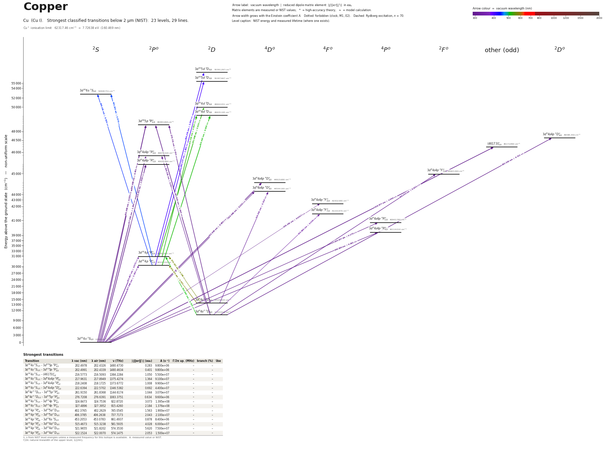

Copper energy level diagram
Energy levels and transitions of neutral copper (Cu I): the 29 strongest classified lines below 2 µm from the NIST Atomic Spectra Database and the 23 levels they connect, each line with its vacuum wavelength, frequency and, for 29 of them, the reduced dipole matrix element derived from the NIST transition rate. Lifetimes, hyperfine constants and isotope shifts from the literature have not been compiled for this element yet.
Hover a line or a level to isolate it, click to keep it selected. Scroll to zoom, drag to move.

Download: diagram (PDF) diagram (SVG) transitions (CSV) levels (CSV) source code

Strongest transitions of copper
| Transition | λ vac (nm) | λ air (nm) | ν (THz) | |⟨J‖er‖J′⟩| (ea₀) | A (s⁻¹) | Γ/2π up. (MHz) | branch (%) | Use |
|---|---|---|---|---|---|---|---|---|
| 3d104s 2S1/2 – 3d105p 2P°1/2 | 202.4978 | 202.4326 | 1480.4730 | 0.283 | 9.800e+06 | – | – | |
| 3d104s 2S1/2 – 3d105p 2P°3/2 | 202.4991 | 202.4339 | 1480.4634 | 0.401 | 9.800e+06 | – | – | |
| 3d104s 2S1/2 – (46173)°3/2 | 216.5773 | 216.5093 | 1384.2284 | 1.050 | 5.500e+07 | – | – | |
| 3d104s 2S1/2 – 3d94s4p 2P°3/2 | 217.9631 | 217.8949 | 1375.4274 | 1.364 | 9.100e+07 | – | – | |
| 3d104s 2S1/2 – 3d94s4p 2P°1/2 | 218.2408 | 218.1725 | 1373.6772 | 1.008 | 9.900e+07 | – | – | |
| 3d104s 2S1/2 – 3d94s4p 4D°1/2 | 222.6394 | 222.5702 | 1346.5382 | 0.692 | 4.400e+07 | – | – | |
| 3d94s2 2D5/2 – 3d105p 2P°3/2 | 261.9150 | 261.8368 | 1144.6174 | 1.044 | 3.070e+07 | – | – | |
| 3d94s2 2D3/2 – 3d105p 2P°3/2 | 276.7208 | 276.6391 | 1083.3751 | 0.634 | 9.600e+06 | – | – | |
| 3d104s 2S1/2 – 3d104p 2P°3/2 | 324.8473 | 324.7536 | 922.8720 | 3.073 | 1.395e+08 | – | – | |
| 3d104s 2S1/2 – 3d104p 2P°1/2 | 327.4896 | 327.3952 | 915.4260 | 2.184 | 1.376e+08 | – | – | |
| 3d104p 2P°1/2 – 3d105d 2D3/2 | 402.3765 | 402.2629 | 745.0545 | 1.563 | 1.900e+07 | – | – | |
| 3d104p 2P°3/2 – 3d105d 2D5/2 | 406.3785 | 406.2638 | 737.7173 | 2.043 | 2.100e+07 | – | – | |
| 3d104p 2P°3/2 – 3d106s 2S1/2 | 453.2053 | 453.0783 | 661.4937 | 0.878 | 8.400e+06 | – | – | |
| 3d104p 2P°1/2 – 3d104d 2D3/2 | 515.4673 | 515.3238 | 581.5935 | 4.028 | 6.000e+07 | – | – | |
| 3d104p 2P°3/2 – 3d104d 2D5/2 | 521.9655 | 521.8202 | 574.3530 | 5.620 | 7.500e+07 | – | – | |
| 3d104p 2P°3/2 – 3d104d 2D3/2 | 522.1524 | 522.0070 | 574.1475 | 2.053 | 1.500e+07 | – | – |
λ, ν from NIST level energies unless a measured frequency for this isotope is available. A: measured value or NIST. Γ/2π: natural linewidth of the upper level, 1/(2πτ).
Listed Cu transitions below 2 µm
| Lower level | Upper level | λ vacuum (nm) | λ air (nm) | ν (THz) | Type | |⟨J‖er‖J′⟩| (ea₀) | A (s⁻¹) | Branching (%) | Source of matrix element / A |
|---|---|---|---|---|---|---|---|---|---|
| 3d104s 2S1/2 | 3d105p 2P°1/2 | 202.4978 | 202.4326 | 1480.4730 | E1 | 0.283 NIST | 9.800e+06 NIST | – | NIST ASD (accuracy B) |
| 3d104s 2S1/2 | 3d105p 2P°3/2 | 202.4991 | 202.4339 | 1480.4634 | E1 | 0.401 NIST | 9.800e+06 NIST | – | NIST ASD (accuracy B) |
| 3d104s 2S1/2 | (46173)°3/2 | 216.5773 | 216.5093 | 1384.2284 | E1 | 1.050 NIST | 5.500e+07 NIST | – | NIST ASD (accuracy C+) |
| 3d104s 2S1/2 | 3d94s4p 2P°3/2 | 217.9631 | 217.8949 | 1375.4274 | E1 | 1.364 NIST | 9.100e+07 NIST | – | NIST ASD (accuracy C+) |
| 3d104s 2S1/2 | 3d94s4p 2P°1/2 | 218.2408 | 218.1725 | 1373.6772 | E1 | 1.008 NIST | 9.900e+07 NIST | – | NIST ASD (accuracy C+) |
| 3d104s 2S1/2 | 3d94s4p 4D°1/2 | 222.6394 | 222.5702 | 1346.5382 | E1 (intercombination) | 0.692 NIST | 4.400e+07 NIST | – | NIST ASD (accuracy C+) |
| 3d104s 2S1/2 | 3d94s4p 4D°3/2 | 224.4963 | 224.4267 | 1335.4003 | E1 (intercombination) | 0.203 NIST | 1.850e+06 NIST | – | NIST ASD (accuracy C+) |
| 3d104s 2S1/2 | 3d94s4p 4F°3/2 | 236.3922 | 236.3200 | 1268.1994 | E1 (intercombination) | 0.0427 NIST | 7.000e+04 NIST | – | NIST ASD (accuracy E) |
| 3d104s 2S1/2 | 3d94s4p 4P°1/2 | 244.2373 | 244.1633 | 1227.4636 | E1 (intercombination) | 0.170 NIST | 2.010e+06 NIST | – | NIST ASD (accuracy B) |
| 3d104s 2S1/2 | 3d94s4p 4P°3/2 | 249.2895 | 249.2143 | 1202.5878 | E1 (intercombination) | 0.292 NIST | 2.790e+06 NIST | – | NIST ASD (accuracy B) |
| 3d94s2 2D5/2 | 3d105p 2P°3/2 | 261.9150 | 261.8368 | 1144.6174 | E1 | 1.044 NIST | 3.070e+07 NIST | – | NIST ASD (accuracy C) |
| 3d94s2 2D3/2 | 3d105p 2P°3/2 | 276.7208 | 276.6391 | 1083.3751 | E1 | 0.634 NIST | 9.600e+06 NIST | – | NIST ASD (accuracy C+) |
| 3d94s2 2D5/2 | 3d94s4p 2D°5/2 | 282.5199 | 282.4368 | 1061.1373 | E1 | 0.722 NIST | 7.800e+06 NIST | – | NIST ASD (accuracy C+) |
| 3d94s2 2D5/2 | 3d94s4p 2F°7/2 | 296.2029 | 296.1164 | 1012.1186 | E1 | 0.621 NIST | 3.760e+06 NIST | – | NIST ASD (accuracy C+) |
| 3d94s2 2D3/2 | 3d94s4p 2P°3/2 | 306.4300 | 306.3410 | 978.3390 | E1 | 0.297 NIST | 1.550e+06 NIST | – | NIST ASD (accuracy C+) |
| 3d94s2 2D3/2 | 3d94s4p 4D°3/2 | 319.5019 | 319.4096 | 938.3119 | E1 (intercombination) | 0.316 NIST | 1.550e+06 NIST | – | NIST ASD (accuracy C+) |
| 3d104s 2S1/2 | 3d104p 2P°3/2 | 324.8473 | 324.7536 | 922.8720 | E1 | 3.073 NIST | 1.395e+08 NIST | – | NIST ASD (accuracy AA) |
| 3d104s 2S1/2 | 3d104p 2P°1/2 | 327.4896 | 327.3952 | 915.4260 | E1 | 2.184 NIST | 1.376e+08 NIST | – | NIST ASD (accuracy AA) |
| 3d94s2 2D5/2 | 3d94s4p 4F°7/2 | 333.8803 | 333.7843 | 897.9040 | E1 (intercombination) | 0.236 NIST | 3.800e+05 NIST | – | NIST ASD (accuracy C+) |
| 3d104p 2P°1/2 | 3d105d 2D3/2 | 402.3765 | 402.2629 | 745.0545 | E1 | 1.563 NIST | 1.900e+07 NIST | – | NIST ASD (accuracy C) |
| 3d104p 2P°3/2 | 3d105d 2D5/2 | 406.3785 | 406.2638 | 737.7173 | E1 | 2.043 NIST | 2.100e+07 NIST | – | NIST ASD (accuracy C) |
| 3d104p 2P°1/2 | 3d106s 2S1/2 | 448.1607 | 448.0349 | 668.9397 | E1 | 0.516 NIST | 3.000e+06 NIST | – | NIST ASD (accuracy C) |
| 3d104p 2P°3/2 | 3d106s 2S1/2 | 453.2053 | 453.0783 | 661.4937 | E1 | 0.878 NIST | 8.400e+06 NIST | – | NIST ASD (accuracy C+) |
| 3d94s2 2D5/2 | 3d104p 2P°3/2 | 510.6971 | 510.5548 | 587.0260 | E1 | 0.725 NIST | 2.000e+06 NIST | – | NIST ASD (accuracy C+) |
| 3d104p 2P°1/2 | 3d104d 2D3/2 | 515.4673 | 515.3238 | 581.5935 | E1 | 4.028 NIST | 6.000e+07 NIST | – | NIST ASD (accuracy C+) |
| 3d104p 2P°3/2 | 3d104d 2D5/2 | 521.9655 | 521.8202 | 574.3530 | E1 | 5.620 NIST | 7.500e+07 NIST | – | NIST ASD (accuracy C+) |
| 3d104p 2P°3/2 | 3d104d 2D3/2 | 522.1524 | 522.0070 | 574.1475 | E1 | 2.053 NIST | 1.500e+07 NIST | – | NIST ASD (accuracy C+) |
| 3d94s2 2D3/2 | 3d104p 2P°3/2 | 570.1822 | 570.0240 | 525.7836 | E1 | 0.296 NIST | 2.400e+05 NIST | – | NIST ASD (accuracy C+) |
| 3d94s2 2D3/2 | 3d104p 2P°1/2 | 578.3730 | 578.2126 | 518.3376 | E1 | 0.561 NIST | 1.650e+06 NIST | – | NIST ASD (accuracy C+) |
Reduced dipole matrix elements follow the convention A = ω³|d|²/(3πε₀ħc³(2J′+1)), with J′ the upper level. Tags show where a number comes from: measured, NIST compilation, high-accuracy theory, or a model calculation.
Cu energy levels
| Level | Energy (cm⁻¹) | J | Parity | Lifetime | gJ | Hyperfine A (MHz) | Hyperfine B (MHz) | Lifetime source | Hyperfine source |
|---|---|---|---|---|---|---|---|---|---|
| 3d104s 2S1/2 | 0.000 | 1/2 | even | stable | 2 | – | – | – | – |
| 3d94s2 2D5/2 | 11202.618 | 5/2 | even | – | 1.23 | – | – | – | – |
| 3d94s2 2D3/2 | 13245.443 | 3/2 | even | – | 0.8 | – | – | – | – |
| 3d104p 2P°1/2 | 30535.324 | 1/2 | odd | – | 0.68 | – | – | – | – |
| 3d104p 2P°3/2 | 30783.697 | 3/2 | odd | – | 1.33 | – | – | – | – |
| 3d94s4p 4P°3/2 | 40114.010 | 3/2 | odd | – | 1.75 | – | – | – | – |
| 3d94s4p 4P°1/2 | 40943.780 | 1/2 | odd | – | 2.62 | – | – | – | – |
| 3d94s4p 4F°7/2 | 41153.470 | 7/2 | odd | – | 1.26 | – | – | – | – |
| 3d94s4p 4F°3/2 | 42302.580 | 3/2 | odd | – | 0.44 | – | – | – | – |
| 3d94s4p 4D°3/2 | 44544.160 | 3/2 | odd | – | 1.09 | – | – | – | – |
| 3d94s4p 4D°1/2 | 44915.680 | 1/2 | odd | – | – | – | – | – | – |
| 3d94s4p 2F°7/2 | 44963.260 | 7/2 | odd | – | 1.22 | – | – | – | – |
| 3d94s4p 2P°1/2 | 45820.940 | 1/2 | odd | – | – | – | – | – | – |
| 3d94s4p 2P°3/2 | 45879.320 | 3/2 | odd | – | 1.22 | – | – | – | – |
| (46173)°3/2 | 46172.890 | 3/2 | odd | – | 0.69 | – | – | – | – |
| 3d94s4p 2D°5/2 | 46598.350 | 5/2 | odd | – | 1.22 | – | – | – | – |
| 3d105p 2P°3/2 | 49382.945 | 3/2 | odd | – | – | – | – | – | – |
| 3d105p 2P°1/2 | 49383.264 | 1/2 | odd | – | – | – | – | – | – |
| 3d104d 2D3/2 | 49935.195 | 3/2 | even | – | 0.82 | – | – | – | – |
| 3d104d 2D5/2 | 49942.051 | 5/2 | even | – | 1.19 | – | – | – | – |
| 3d106s 2S1/2 | 52848.751 | 1/2 | even | – | 1.99 | – | – | – | – |
| 3d105d 2D3/2 | 55387.667 | 3/2 | even | – | 0.77 | – | – | – | – |
| 3d105d 2D5/2 | 55391.297 | 5/2 | even | – | 1.22 | – | – | – | – |
Cu⁺ ionisation limit 62317.46 cm⁻¹ = 7.72638 eV (160.469 nm)
Sources
Atoms with measured data
- Lithium-632 levels, 85 lines
- Lithium-732 levels, 85 lines
- Beryllium-915 levels, 24 lines
- Sodium-2336 levels, 106 lines
- Magnesium-2418 levels, 61 lines
- Magnesium-2518 levels, 61 lines
- Potassium-3934 levels, 84 lines
- Potassium-4034 levels, 84 lines
- Potassium-4134 levels, 84 lines
- Calcium-4035 levels, 61 lines
- Calcium-4335 levels, 61 lines
- Rubidium-8536 levels, 94 lines
- Rubidium-8736 levels, 94 lines
- Strontium-8740 levels, 70 lines
- Strontium-8840 levels, 70 lines
- Caesium-13331 levels, 79 lines
- Barium-13744 levels, 89 lines
- Barium-13844 levels, 89 lines
- Dysprosium-16339 levels, 55 lines
- Dysprosium-16439 levels, 55 lines
- Ytterbium-17118 levels, 26 lines
- Ytterbium-17418 levels, 26 lines